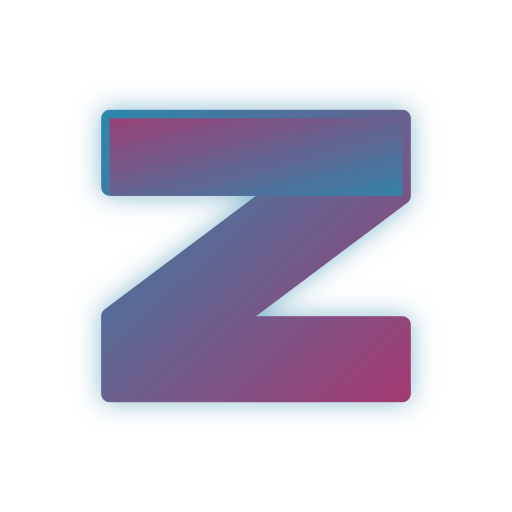

Brand system v1 — verified on screen
Colour, type, symbol, agents and social templates generated from one geometry. Contrast values are measured; the numbers below are the restrictions that follow from them.
Palette
Electric blue
#2E86AB · 4.56 on navy
Purple
#A23B72 · 3.04 — large only
Ice white
#F8F9FA · 17.76 AAA
Dark navy
#0B1220
Cyan (neon)
#4FD1E8 · 10.36 AAA
Actions
The legible primary is cyan on navy (10.36). The blue button with ice text measures 3.9, so its label is 18px/600 — shown here at that size, which is the minimum.
Agents


On light
Purple moves to the accent position on light surfaces, where it measures 5.85 and is safe for text.
Social
Any figure inside artwork carries a demo chip. No verification badge appears in any template.